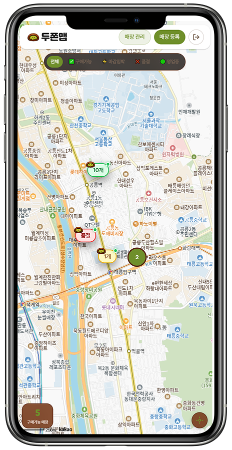

두쫀맵

About Project
-
프로젝트 기간:
26.03.09 ~ 26.03.13
-
프로젝트 인원:
1명(조정원)
-
역할 (담당 업무):
1. UI 퍼블리싱 100%
2. 프론트엔드 개발 100% 3. 백엔드 개발(firebase) 100% -
프로젝트 설명:
두쫀맵은 두쫀쿠를 판매하는 카페의 실시간 재고를 지도 위에서 한눈에 확인할 수 있는 서비스입니다.
사장님이 직접 재고·영업시간·영업 요일을 등록·관리하고, 손님은 지도에서 구매가능 / 마감임박 / 품절 상태를 보고 헛걸음 없이 방문할 수 있습니다. -
기술 스택:
- React.js
- Firebase
- Scss(Sass) (UI 스타일링) - URL:
Publishing Guide
-
_variables.scss
(2) Typography
여기어때 잘난체
Pretendard
여기어때 잘난체
Pretendard
(3) SCSS/SASS
-
Tailwind.css
- Dark Mode
Tailwind CSS를 활용한 다크모드 구현은 단순한 색상 전환을 넘어, 구조적으로 확장 가능하고 유지보수에 강한 설계를 가능하게 합니다. dark: 유틸리티 기반의 명시적인 스타일 분기 방식은 전역 상태 관리와의 결합이 용이하며, 별도의 복잡한 CSS 분리 없이도 일관된 디자인 시스템을 유지할 수 있습니다. 또한 JIT 컴파일 방식으로 실제 사용되는 스타일만 생성되기 때문에 성능 부담이 적고, 상태 조합(hover, focus 등)까지 자연스럽게 확장할 수 있어 대규모 프로젝트에서도 안정적인 테마 전략을 구축할 수 있습니다.
(4) 간단한 회원가입
Toss 앱의 UX 패턴을 참고해, 입력 자리수가 고정된 정보의 경우 별도의 CTA 버튼 없이 즉시 다음 단계로 전환되도록 설계했습니다. 이를 통해 불필요한 클릭을 제거하고,
퍼널 기반 흐름으로 사용자의 인지 부담과
피로도를 최소화했습니다.
또한 입력 필드 진입 시점에 적절한 키보드 타입을 자동으로 호출하고 기본 Focus 상태로 설정해, 사용자가 추가 조작 없이 곧바로 입력에 집중할 수 있도록 구현했습니다.